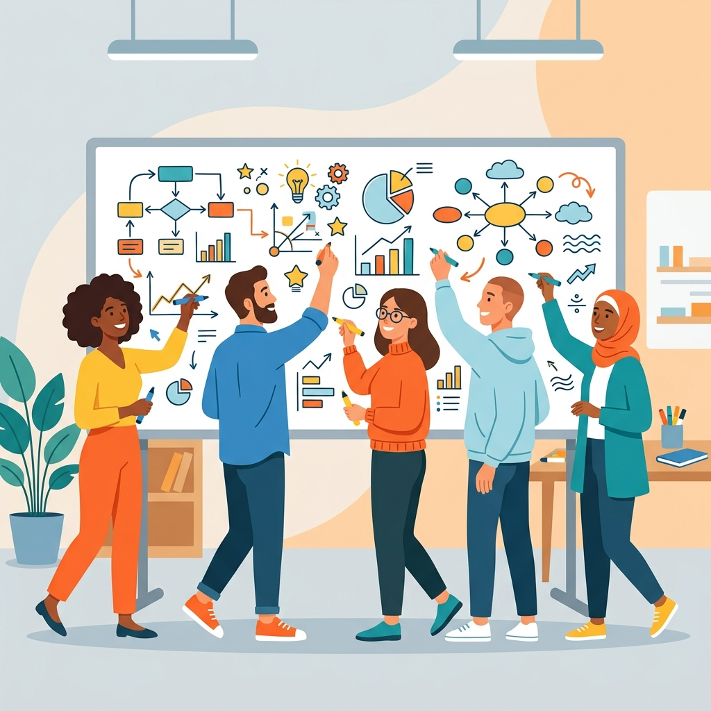

実践を通じてスキルを磨く
共通のお題に対して、自ら手を動かし、試行錯誤しながら成果物をつくります。実際に取り組む経験を、日々の業務で活かせるスキルにつなげます。
URA・研究開発マネジメント人材の学びの場
!
共通のお題に取り組み、それぞれの成果や工夫を持ち寄る。ゆるコンペは、URA同士が実践を通じてつながり、互いの仕事から学ぶイベントです。
ゆるコンペを知るCONCEPT
URA業務には、デザイン、データ分析、ライティングなど、実際に手を動かしてこそ身につくスキルがあります。しかし、こうしたスキルを磨く機会は限られており、一人では取り組むきっかけをつかんだり、意欲を保ったりすることが難しい場合もあります。また、具体的なスキルやノウハウは個人や組織の中に留まりがちで、互いの実践から学ぶ機会も十分とはいえません。
ゆるコンペは、URA業務に即した共通のお題にみんなで取り組む、コンペティション形式の自己研鑽イベントです。自ら試行錯誤しながらスキルを磨くとともに、成果物だけでなくプロセスや視点を共有することで、参加者同士が学び合い、新たな視点やテクニックを得る場をつくります。
共通のお題に対して、自ら手を動かし、試行錯誤しながら成果物をつくります。実際に取り組む経験を、日々の業務で活かせるスキルにつなげます。
他の参加者の成果物に触れ、作成プロセスや工夫、考え方を共有します。交流を通じて、自分にはなかった視点やテクニックを学びます。
初級の方には、スキルアップや経験を積む機会に。中級・上級の方には、腕試しの機会に。それぞれの経験に応じて活用できる場を目指しています。
EDITIONS
募集内容や参加条件は、各回のサイトでご案内します。
終了した回の作品や記録も、こちらからご覧いただけます。

GUIDE
URA等の研究開発マネジメントに携わる方に向けた自己研鑽イベントです。各回の応募資格や参加条件は、その回のサイトでご確認ください。
テーマは毎年変わります。第１回はポンチ絵でしたが、次回以降のテーマは、決まり次第お知らせします。
初級の方にはスキルアップや経験を積む機会として、中級・上級の方には腕試しの機会としてご活用いただけます。まだ自信がない方も、みんなと一緒に実践する機会にしてください。参加条件や必要な準備は、各回の案内をご確認ください。
競争の要素を取り入れながら、成果物をつくるプロセスや参加者同士の学び合いを大切にしています。審査・投票・表彰などの実施方法は、各回のサイトでご案内します。